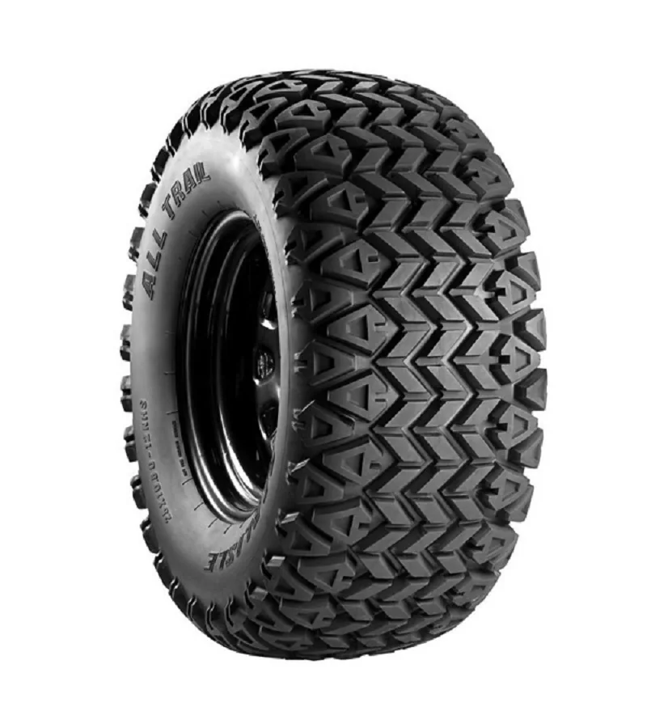
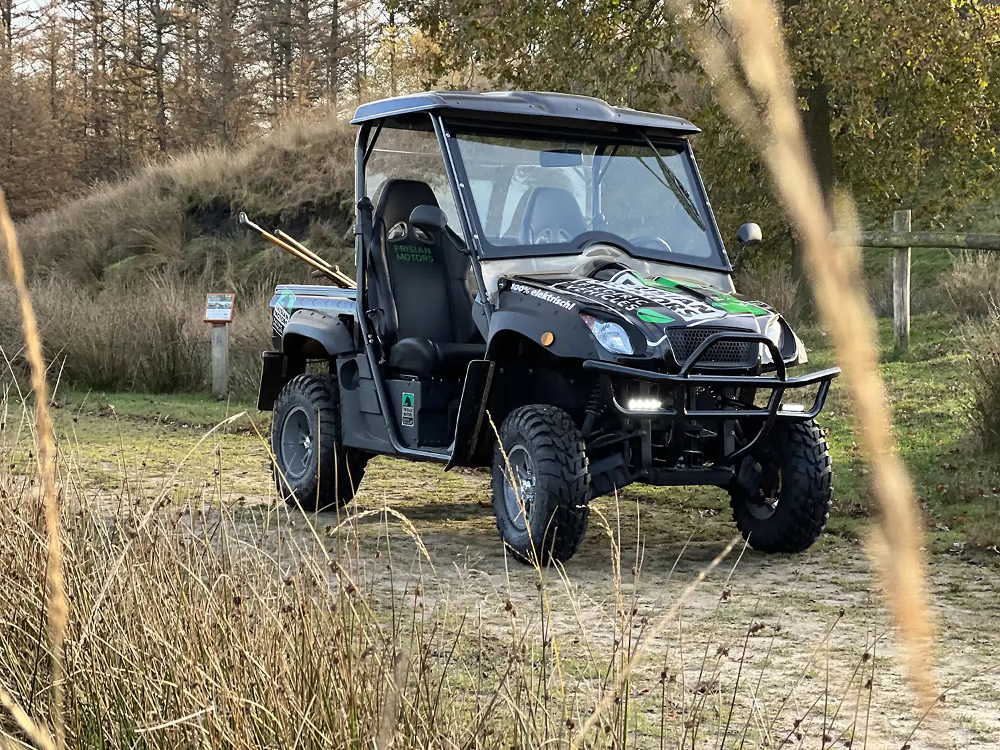
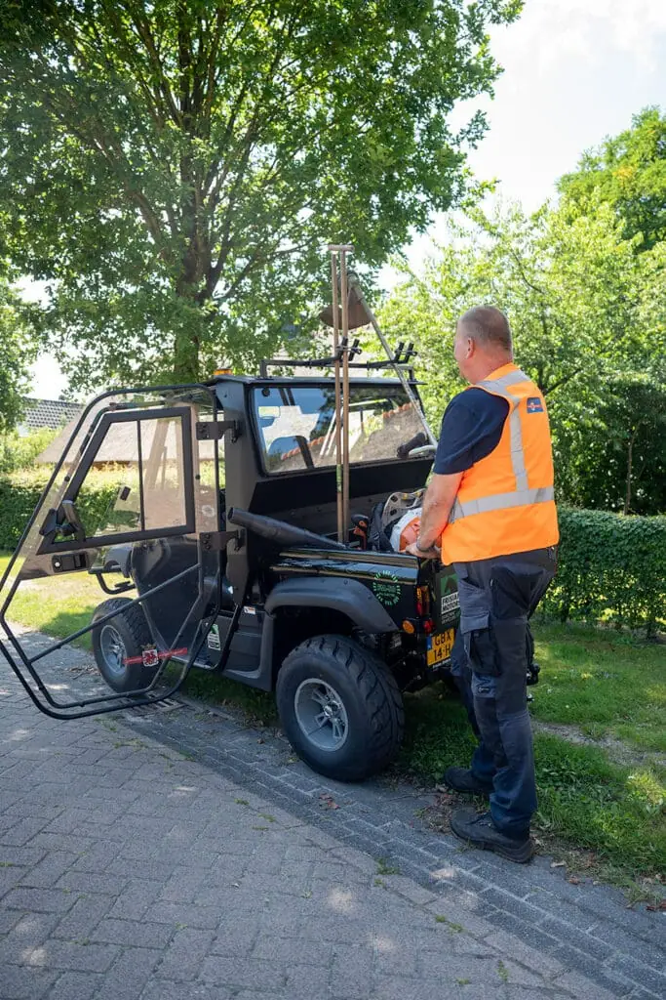
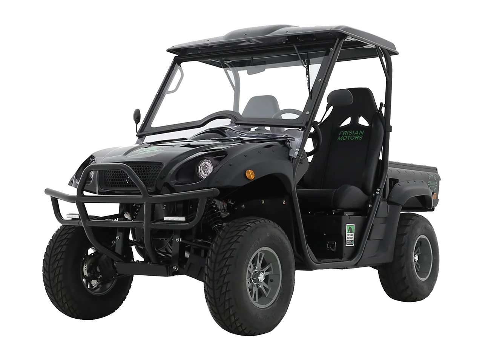
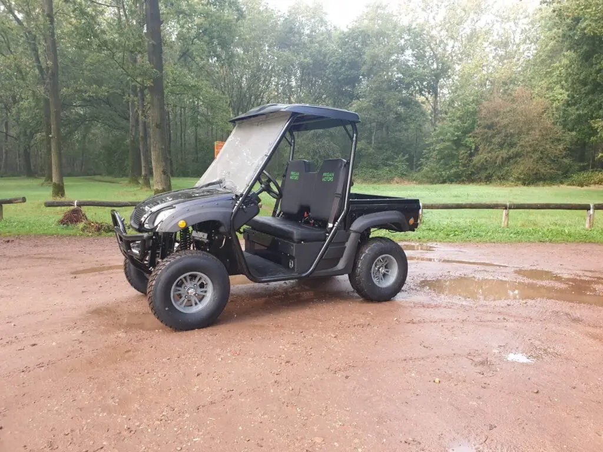
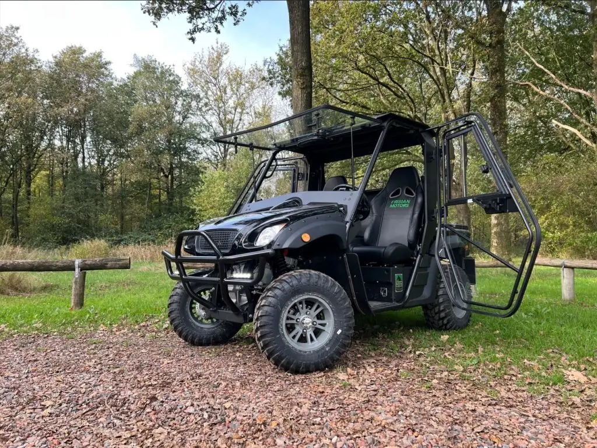
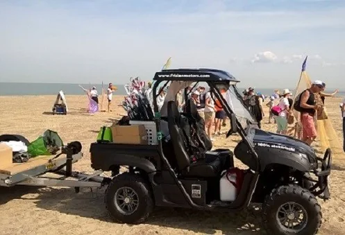

Terreinbanden
Leffert terreinbanden, set van vier stuks. Vervangbaar en direct uit voorraad leverbaar via de webshop.
Bestellen →
Geruisloos en milieuvriendelijk. Een robuust en compact elektrisch werkvoertuig, ontwikkeld voor professioneel terreinvervoer.
De Leffert FM-50 van Frisian Motors is een robuust en compact elektrisch werkvoertuig dat speciaal is ontwikkeld voor professioneel terreinvervoer. Deze 100% elektrische transporter combineert wendbaarheid, kracht en functionaliteit in één duurzame oplossing voor organisaties die kiezen voor efficiënt transport.
Stil rijden en emissievrij werken zorgen voor minimale belasting van de omgeving en maximaal comfort voor gebruikers. Dankzij de praktische laadbak en sterke elektrische aandrijving is het voertuig ideaal voor onderhoudswerkzaamheden, groenbeheer, technische dienst en logistieke ondersteuning.

De kerngegevens van de standaarduitvoering. Afwijkende uitvoeringen en maatwerk zijn in overleg mogelijk.
Zakelijke gebruikers kunnen in sommige gevallen gebruik maken van subsidieregelingen van de overheid.

Afhankelijk van de gebruikswensen kan het voertuig niet alleen technisch, maar ook qua uiterlijk geheel naar wens van de klant worden samengesteld.
Bij specifieke gebruiksdoeleinden zijn er tal van accessoires beschikbaar, die het voertuig multifunctioneel maken. Denk hierbij aan verlengde of geheel gesloten laadbakken of een gesloten en verwarmde cabine. Zelfs een uitvoering als verlengde vierzitter behoort tot de mogelijkheden.
Speciaal voor onze voertuigen hebben wij een krachtige accu ontworpen. Onze lithium accu's zijn krachtiger, laden sneller op, zijn minder zwaar en gaan drie keer langer mee dan de loodaccu's.
De accu's zijn uitgerust met de nieuwste accuwisseltechniek. Met een externe acculader op het lichtnet is de Leffert transporter overal en altijd binnen acht uur opgeladen. Vier uur is optioneel.

Veel aspecten van het voertuig kunnen aangepast worden. Benieuwd wat wij voor u kunnen betekenen?

Leffert terreinbanden, set van vier stuks. Vervangbaar en direct uit voorraad leverbaar via de webshop.
Bestellen →
Wilt u er graag warmpjes bij zitten? Dan is het mogelijk om de cabine van de Leffert winddicht te maken.
Meer informatie →
Van verlengde laadbak tot een volledig gesloten uitvoering. Wij bouwen de FM-50 om naar uw werkzaamheden.
Meer informatie →Wij komen graag bij u langs, of u komt naar Bakkeveen. Een proefrit is gratis en geheel vrijblijvend, en u merkt binnen vijf minuten wat emissievrij werken met uw team doet.
Blijf op de hoogte van de innovaties van Frisian Motors.